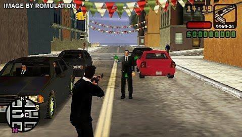
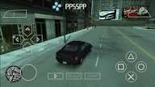
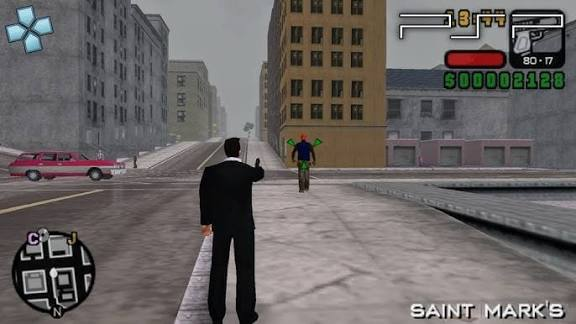

Best PSP Games for PPSSPP Emulator
Best PSP Games for PPSSPP Emulator

GTA: Liberty City Stories PPSSPP – PSP (Download for Android) is one of the most iconic entries in the Grand Theft Auto franchise, featuring one of the series' oldest and most significant storylines. Originally released as a PlayStation Portable (PSP) exclusive, the game later arrived on PlayStation 2, but it remains one of the most sought-after titles for the PPSSPP emulator on Android.
Check out the best ppsspp cheats codes
In this game, players step into the shoes of Toni Cipriani, a loyal member of the Leone crime family who returns to Liberty City to reclaim his position in the criminal underworld. The story serves as a prequel to the events of GTA III, chronicling Toni’s rise through the ranks in a world filled with betrayal, violence, high-stakes missions, and unforgettable characters.

The game provides a complete open-world experience, allowing players to freely explore the city, drive various vehicle types, engage in main story missions and side activities, and unleash the classic chaos the GTA series is known for. The Liberty City depicted in Liberty City Stories is vibrant, detailed, and packed with secrets waiting to be discovered.

The graphics are impressive for the PSP hardware, featuring solid lighting, a well-crafted urban atmosphere, and a signature soundtrack. Running smoothly on PPSSPP – PSP for Android, the game delivers a full-scale GTA experience directly on your mobile device.

GTA: Liberty City Stories PPSSPP is highly recommended for franchise fans and anyone seeking an action-packed, open-world crime game with a compelling narrative and vast gameplay freedom.
WWE 2K25